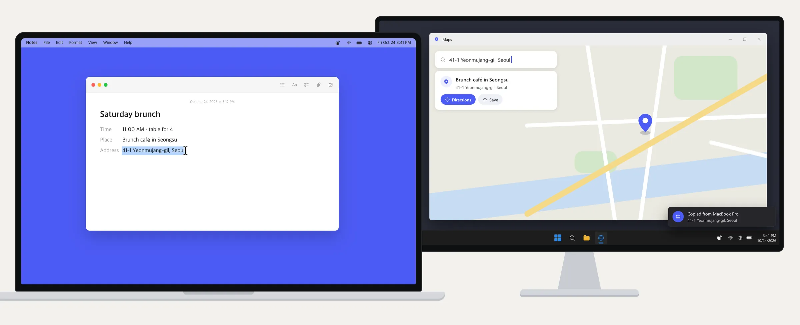
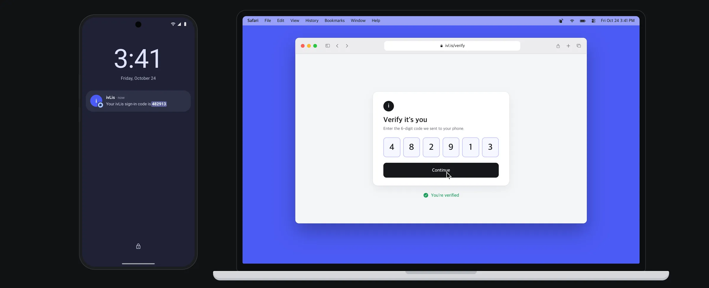
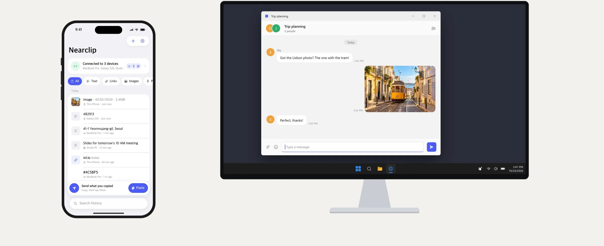
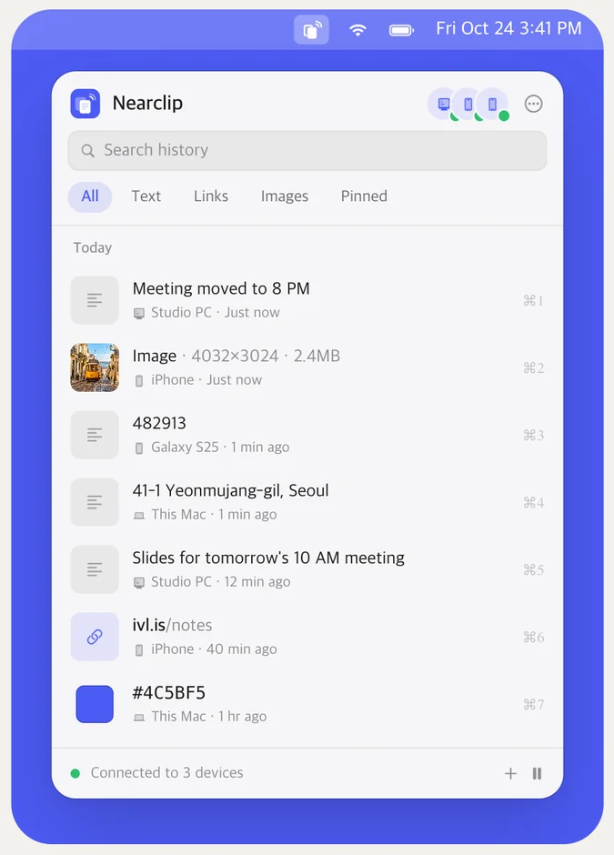
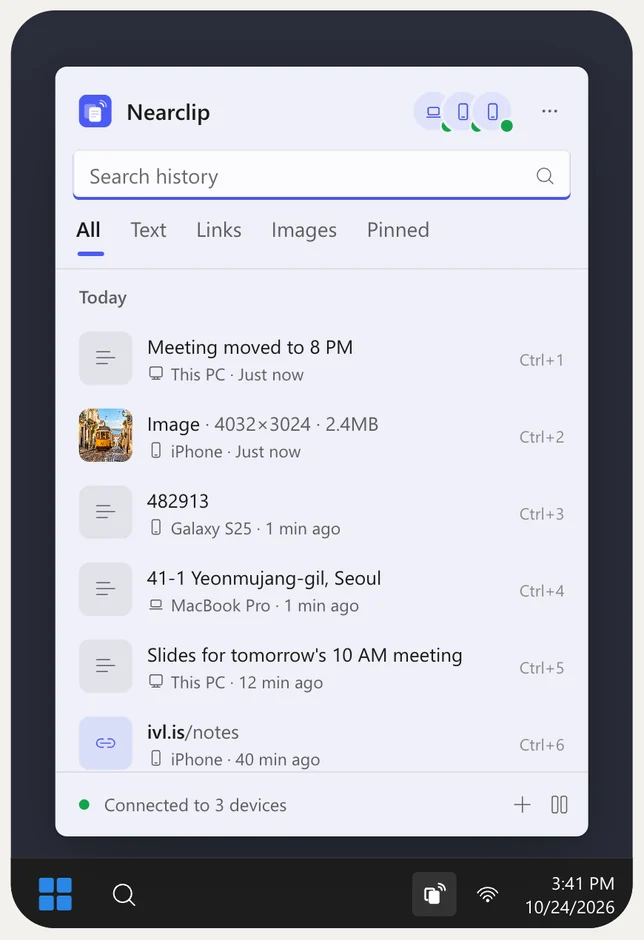
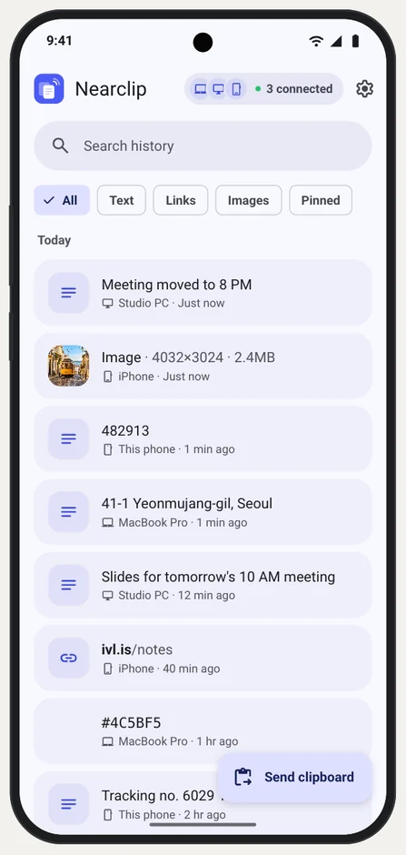
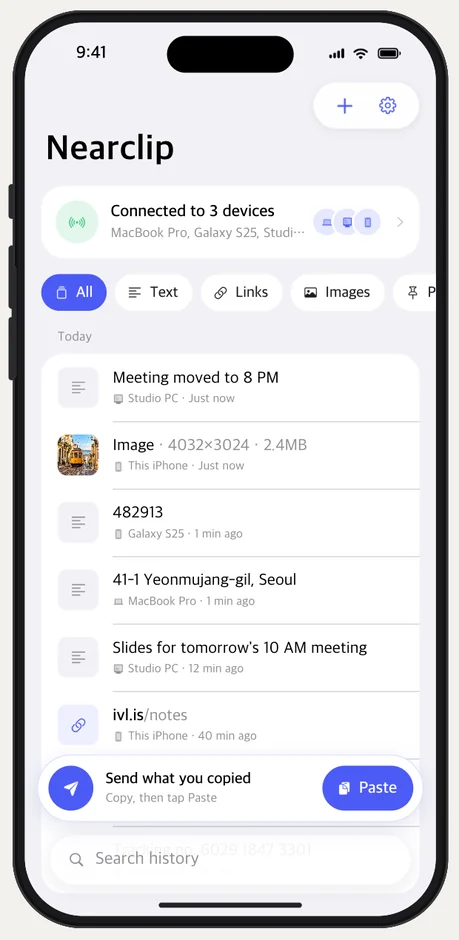

Copy here.
Paste there.
One clipboard for every device you own, whoever made it. Copy on your Mac, paste on your Windows PC, Galaxy or iPhone — with no account, no server and end-to-end encryption.
Try it: press ⌘C, Ctrl C, Send or Paste on any device.
The pairs nothing else connects.
Mac and iPhone already share a clipboard, and so do some Windows PCs and Android phones. Nearclip connects everything else — every device with every device.



Mac ↔ Galaxy, Windows ↔ iPhone, iPad ↔ Windows… any combination works, up and down the list.
Set up in a minute. Then just copy.
No sign-up, no cables, no cloud. Your devices find each other on your Wi-Fi and talk directly.
Install it everywhere
Mac, Windows PC, Android phone, iPhone and iPad. Four native apps, all free.
Add your devices
Scan the QR code with your phone, or check that both computers show the same 6-digit code.
Copy as usual
On a computer, copying is all it takes. On a phone it's one tap — iOS and Android keep the clipboard from apps in the background.
Made for each platform, not ported to it.
No Electron, no web views. Swift on Apple devices, WinUI 3 on Windows, Jetpack Compose on Android — each one where you'd expect it, with the same history inside.

macOS
Menu bar app · macOS 14+
- Copy as usual — it's already on your other devices
- ⌃⌘V opens a Spotlight-style history panel
- Liquid Glass on macOS 26, Apple silicon and Intel

Windows
Tray app · Windows 10 1809+ and 11
- Copies sync the moment you press Ctrl+C
- Win Alt V opens a Win+V-style flyout
- Mica, your accent color, x64 and Arm64

Android
Material You · Android 8+
- Receives in the background, straight to the clipboard
- Send from the app, a Quick Settings tile, Share or the text menu
- Optional instant capture with Shizuku

iPhone & iPad
SwiftUI · iOS 17+
- Tap Paste to send what you copied
- Or send it automatically when you open the app
- Catches up on everything you missed, instantly
Quiet when it works. Clear when it matters.
Everything you copy lands where you need it, and you always know where it came from.
Big photos, no guessing.
Copy a large image and your other devices show it coming at once — size and progress first, then the picture, ready to paste. Up to 32 MB.
One history, on every device.
Search it, filter it, pin what you reuse. Delete a clip once and it's gone from all of them.
Catches up
A device that was asleep or away gets the last 7 days the moment it's back.
Mesh, not a hub
Every device passes clips on to the others, so partly connected networks still stay in sync.
Passwords stay put
Anything your password manager marks private is never synced. Ignore apps or pause anytime.
Keyboard first
⌃⌘V on a Mac, Win Alt V on Windows: find a clip, press Return, done.
Text, links, images
Plain text up to 4 MB, links, colors and pictures, with a preview of each.
Always know the source
"Copied from iPhone" — a quiet note tells you every time a clip arrives.
Feels at home
Light and dark, English and Korean, and each platform's own look and controls.
Open source
MIT licensed. Read the protocol, run the tests, build it yourself.
Another network?
Still one clipboard.
Turn on Remote connection and sign in with the same free Tailscale account on each device. Tailscale is built into Nearclip — nothing else to install, no VPN to set up.
- Wi-Fi firstOn the same network, devices keep connecting directly.
- You see the routeConnected · Same network, or Connected · Remote.
- Still end-to-end encryptedTailscale carries the connection, never a readable clip.
- Off until you want itWithout it, nothing ever leaves your network.
No server to trust. There isn't one.
Nearclip has no cloud, no account and no analytics. Your clips travel from your device to your device, encrypted with keys only they hold.
No server, no account
Devices find each other on your network (Bonjour / mDNS) and connect directly.
End-to-end encrypted
Fresh keys for every connection (P-256 ECDH, AES-256-GCM): even recorded traffic stays unreadable.
Paired by you
A QR code or a 6-digit code you compare. A device in the middle can't fake a match.
Delete everywhere
Remove a clip, clear history or leave the group — it applies on every device.
Get Nearclip on all of them.
Free on every platform. Install it on two devices and you're done.
Mac
macOS 14 or later · Apple silicon and Intel
- Unzip and move Nearclip to Applications.
- Open it — it's signed and notarized by Apple. It lives in the menu bar.
- On your first copy, choose Always Allow so Nearclip can read the clipboard.
Windows
Windows 10 1809 or later, Windows 11
- Unzip anywhere and run Nearclip.exe.
- It isn't code-signed yet: if SmartScreen appears, choose More info › Run anyway.
- Allow Nearclip on private networks when the firewall asks.
Android
Android 8 or later
- Open the APK on your phone.
- Allow your browser to install unknown apps when asked.
- Allow notifications — they keep the connection alive in the background.
iPhone & iPad
iOS 17 or later
- Nearclip isn't on the App Store yet.
- Open the project in Xcode, pick your Apple ID as the team and run it on your iPhone.
- With a free Apple ID, reinstall every 7 days.
Questions, answered.
Is Nearclip really free?
Yes. No ads, no subscription, no account. It's open source under the MIT license.
Does my clipboard go through a server?
No. On your network the devices connect directly. With Remote connection on, Tailscale may relay the connection when no direct path is possible — but it stays end-to-end encrypted, so only your devices can read it. Nearclip itself runs no server at all.
Do my devices have to be on the same Wi-Fi?
By default, yes. Turn on Remote connection in Settings and sign in with the same free Tailscale account on each device to sync across networks — home, office or mobile data.
Why do I have to tap on my phone?
iOS and Android 10+ don't let apps read the clipboard in the background. Receiving is automatic on Android; on iPhone it happens while Nearclip is open, and it catches up the moment you open it. On Android, optional instant capture with Shizuku can send text and links right after you copy them.
What about passwords?
Items your password manager marks as private are never synced. On a computer you can also ignore whole apps, and every device can pause syncing.
How big can a clip be?
Text up to 4 MB and images up to 32 MB. Big images show a progress bar on your other devices as soon as you copy.
My devices don't see each other.
Guest and office Wi-Fi often block device-to-device traffic. Try Connect by address in Add device, or turn on Remote connection. On Windows, make sure Nearclip is allowed on private networks.
Where is the iPhone app?
It isn't on the App Store yet. You can build it from source with Xcode in a few minutes — the README walks you through it.